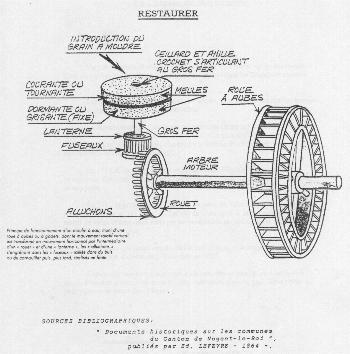

Mairie de Chaudon · Eure-et-Loir 28210
Commune de Chaudon
Bonjour
Il est --:--:--

Quand la rivière « d'Eure » passait au centre du village, il existait, en plus du moulin de Mormoulins, celui dit de Chaudon, qui a aujourd'hui entièrement disparu. M. Lefèvre attribue cette disparition au déplacement du lit de la rivière à l'époque de Henri IV.
Les actes qui suivent, lorsqu'ils sont imprécis, peuvent donc concerner l'un ou l'autre moulin.
En 1335, Pierre Le Bigot rend un aveu au seigneur de Chevreuse, dans lequel est mentionné un moulin sur la rivière d'Eure. Puis dans une transaction de 1396, Gilles Villiers vend à Henri Le Coich, seigneur du Boullay Thierry, « parmi devers biens, un moulin ». En 1407, il est précisé : « moulin de devers Chaudon », et plus tard, en 1496, le moulin de Chaudon fait partie de ceux dont la porte à bateaux est à réparer.
En 1498, on trouve enfin un acte plus explicite : « à la requeste de noble homme Claude de Pilliers, escuier, sieur du Mesnil sur l'Estrée, et noble pie de Chaudon, le sergent du roy, fait saisir sur Mme Jacqueline de Boucherville, veuve de Messire feu Philippes de Fleurigny, en son vivant chevalier, et Mme de Vau, sa fille, le mollin nommé le mollin de Mormollin, avec ses appartenances et dépendances, tant par faute de foy et hommage non faicte, que d'autres droits et devoir de fief non paiés ne faicte. »
Jacques de Fontaines, écuyer, Seigneur de Mormoulins, porte en 1518 à Louis de Pilliers la foi et l'hommage « à cause d'une place de moulin à faire de blé farine assis à Mormoulin sur la rivière d'Eure du côté de devers Chaudon, avec les portes, portelles, écluses, ilons et iles assis près ledit moulin et les ruisseaux dépendants que tenait feue dame Jehanne de Florigny, en son vivant dame du Lo et de Mauzaize, et acquis par ledit de Fontaines par échange du Seigneur de Maupas. »
En 1540, dans une déclaration, deux moulins sont signalés et en 1585, figure dans une donation, un moulin à eau assis à Chaudon.
En 1606, Jean Charles Bochard afferme le moulin moyennant quatre muids et demi de blé, un couple de chapons, un gâteau de vingt livres de filasse.
En 1608, Guillaume Coas vend aussi « un moulin à eau moulant et tournant, faisant de bled farine, une porte à passer bateaux chargés, qui descendent et montent avec le droit de péage et tribut, ainsi qu'il est accoutumé d'être payé ».
En 1657, Charlotte Guillain afferme les deux moulins à eau de Mormoulins pour le prix de 600 livres tournois, outre les faisances, et deux ans plus tard, elle passe un nouveau bail des moulins à eau de Mormoulins.
En 1710, lorsque Anne-Charlotte de Bochart transige avec le meunier, il n'est plus question que d'un seul moulin.
En 1772, l'abbé de Coulombs, ayant acquis de Mlle de la Bachellerie le petit moulin de Chaudon, le démolit et supprime sa chute. En confirmation de cet acte, une transaction de 1780 mentionne le moulin de Chaudon, nouvellement démoli avec droit de le reconstruire.
Sources bibliographiques : Documents Historiques sur les communes du canton de Nogent-le-Roi, publié par Ed. Lefèvre, chef de division à la préfecture d'Eure-et-Loir — 1864.

À partir de la Révolution, des noms connus s'attachent au moulin de Mormoulins :
Des transformations, qui portent principalement sur les vannages, ont lieu. Elles sont très techniques et souvent complexes.
On peut cependant noter en 1879 la demande de vérification de la retenue d'eau du moulin de Boisard par M. Maillard, meunier de Mormoulins, qui trouve que la roue de son moulin est engorgée. L'expertise, qui a lieu à Mormoulins chez le même Maillard, est conduite par Louis Charpentier Alleaume. Cet expert conclut à son impuissance étant donné les fraudes commises pendant l'expertise par le meunier ivre.
Le moulin est décrit à cette date comme ayant deux roues : l'une à aubes planes, de largeur 0,75 m, effectue dix tours par minute, tandis que l'autre, de 3,20 m, marche à trois tours et demi et conduit deux paires de meules.
En 1975, le bâtiment du moulin, intégré à un corps de ferme, abrite encore une bonne partie du mécanisme. C'est une bâtisse de style normand avec colombage en bois comblé de briques et de ciment. Tout près trône une tourelle de l'ancien château, qui confère à l'ensemble un aspect des plus agréables. Mais malheureusement, les bâtiments se détériorent au fil des ans.
En 1984, Claudine et Philippe Bedou font l'acquisition du moulin et entreprennent sa restauration : toiture, habitation, vieille tour dominant la retenue d'eau et bientôt la roue et son mécanisme.